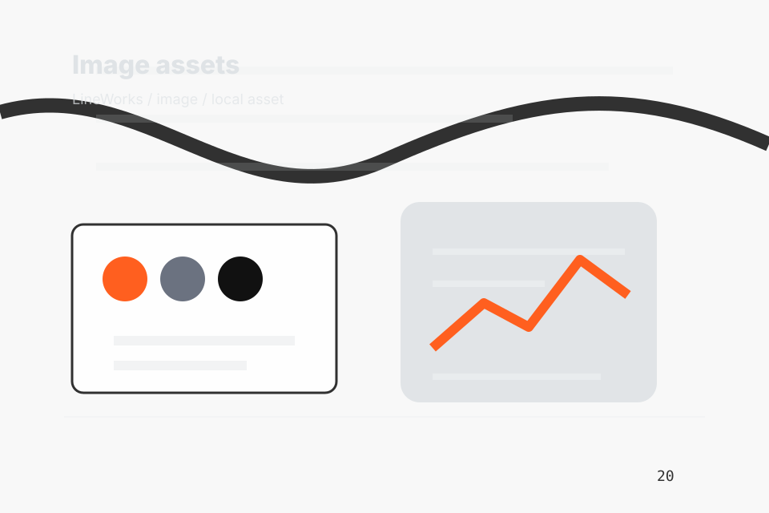

Factory
Open the factory route for company, team, values so manufacturing, production & industrial operations visitors can compare context, proof, and next steps.
Open FactoryHome / 01
Home opens as a clear manufacturing decision hub: what Line offers, who it helps, why it matters, and which route to take first.
The first screen combines positioning, proof, primary action, and fast internal navigation, so people can act immediately or compare the rest of the home route with context.
Precision product hero
Select the closest route and Line keeps the next step, proof, and follow-up expectation aligned with capacity and quality confidence.

Site atlas
This homepage is the working index for manufacturing, production & industrial operations: it explains the offer, points to every deeper page, and keeps the final action visible without making the visitor hunt.
A production capability site with product-spec tables, precise media panels, facility proof, and RFQ routing. The page links problem, promise, services, process, proof, questions, support, legal routes, and conversion paths into one clear decision map.
Open the factory route for company, team, values so manufacturing, production & industrial operations visitors can compare context, proof, and next steps.
Open FactoryOpen the capabilities route for fabrication, assembly, packaging so manufacturing, production & industrial operations visitors can compare context, proof, and next steps.
Open CapabilitiesOpen the industries route for markets, automotive, medical so manufacturing, production & industrial operations visitors can compare context, proof, and next steps.
Open IndustriesOpen the quality route for system, testing, inspection so manufacturing, production & industrial operations visitors can compare context, proof, and next steps.
Open QualityOpen the process route for brief, drawings, prototype so manufacturing, production & industrial operations visitors can compare context, proof, and next steps.
Open ProcessOpen the facilities route for tour, equipment, lines so manufacturing, production & industrial operations visitors can compare context, proof, and next steps.
Open FacilitiesOpen the compliance route for certifications, iso, standards so manufacturing, production & industrial operations visitors can compare context, proof, and next steps.
Open ComplianceOpen the resources route for datasheets, specs, guides so manufacturing, production & industrial operations visitors can compare context, proof, and next steps.
Open ResourcesOpen the contact route for rfq, drawings, quantities so manufacturing, production & industrial operations visitors can compare context, proof, and next steps.
Open ContactReview the local assets, icons, OG images, and static handoff materials used by Line.
Open Asset SystemUse the full sitemap to recover any route and verify the whole Line structure.
Open SitemapRead the privacy route before sending personal details through the static form.
Open PrivacyManage consent and understand the privacy-safe analytics approach.
Open CookiesHome / 02
Need frames the pressure behind the visit, then connects it to a practical path visitors can recognise and act on.
The copy avoids blame and panic. It shows the common friction, the practical consequence, and the calmer route Line uses to move people forward.
Open FactoryNeed names the real friction visitors bring to the home route, so the page feels relevant before any claim is made.
The copy connects that friction to practical risk, delay, confusion, or missed opportunity without exaggerating it.
The final cue moves visitors toward a clearer route instead of leaving them with the problem alone.
Home / 03
Capacity adds technical context to the home route, using the industrial product specification structure to support capacity and quality confidence before visitors choose a next step.
Line uses specification cards and focused copy to make the decision easier to scan, aligning the section with capacity and quality confidence rather than filling space.
Open CapabilitiesCapacity gives the page a specific angle instead of repeating the navigation label.
Home / 04
Promise defines the better state Line is built to create, with enough detail to make the promise believable.
A production capability site with product-spec tables, precise media panels, facility proof, and RFQ routing. The section grounds that direction in concrete benefits, visible tradeoffs, and a next route visitors can use when the promise feels relevant.
Open IndustriesPromise defines what becomes clearer, easier, or safer when Line is the chosen route.
The benefit is tied to capacity and quality confidence, not a vague quality claim.
Visitors get a linked path to compare the promise against services, standards, or examples.
Home / 05
Capabilities adds technical context to the home route, using the industrial product specification structure to support capacity and quality confidence before visitors choose a next step.
Line uses specification cards and focused copy to make the decision easier to scan, aligning the section with capacity and quality confidence rather than filling space.
Open QualityCapabilities gives the page a specific angle instead of repeating the navigation label.
The specification cards show what to compare, what to avoid, and what matters most for manufacturing, production & industrial operations visitors.
The final cue points to a useful internal route so the section keeps the journey moving.
Home / 06
Quality adds technical context to the home route, using the industrial product specification structure to support capacity and quality confidence before visitors choose a next step.
Line uses specification cards and focused copy to make the decision easier to scan, aligning the section with capacity and quality confidence rather than filling space.
Open ProcessQuality gives the page a specific angle instead of repeating the navigation label.
The specification cards show what to compare, what to avoid, and what matters most for manufacturing, production & industrial operations visitors.
The final cue points to a useful internal route so the section keeps the journey moving.
Home / 07
Facilities adds technical context to the home route, using the industrial product specification structure to support capacity and quality confidence before visitors choose a next step.
Line uses specification cards and focused copy to make the decision easier to scan, aligning the section with capacity and quality confidence rather than filling space.
Open FacilitiesFacilities gives the page a specific angle instead of repeating the navigation label.
Home / 08
Industries adds technical context to the home route, using the industrial product specification structure to support capacity and quality confidence before visitors choose a next step.
Line uses specification cards and focused copy to make the decision easier to scan, aligning the section with capacity and quality confidence rather than filling space.
Open ComplianceIndustries gives the page a specific angle instead of repeating the navigation label.
The specification cards show what to compare, what to avoid, and what matters most for manufacturing, production & industrial operations visitors.
The final cue points to a useful internal route so the section keeps the journey moving.
Home / 09
Questions handles buying doubts directly so visitors can understand timing, fit, limits, and the safest next step.
Answers are short by design: enough to remove hesitation, not so much that the page turns into documentation before the visitor can act.
Open ContactQuestions gives the page a specific angle instead of repeating the navigation label.
The specification cards show what to compare, what to avoid, and what matters most for manufacturing, production & industrial operations visitors.
The final cue points to a useful internal route so the section keeps the journey moving.
Line starts with a focused intake so the recommendation matches the visitor's context, risk, timing, and readiness.
Each route explains inclusions, exclusions, documents, timing, and the decision points that affect final delivery.
The theme uses industrial product specification, specification cards, and capability filter, spec table toggle, facility gallery rather than a shared template rhythm.
Precision product hero
Select the closest route and Line keeps the next step, proof, and follow-up expectation aligned with capacity and quality confidence.
Information is provided for planning and should be reviewed for the final client, location, and operating rules.
Home / 10
Line closes the home route with a clear action, a quick reminder of the value, and a low-friction way to send an RFQ.
Visitors who are ready can use the primary action. Visitors who are still comparing can scan the section links, proof, and support routes before they send an RFQ.
Send RFQThe final block keeps the choice simple: act now, compare one more proof route, or send enough detail for a focused response.
Send RFQcapacity and quality confidence
A production capability site with product-spec tables, precise media panels, facility proof, and RFQ routing. Home ends with a direct path to send an RFQ, plus enough context for visitors who still need to compare.